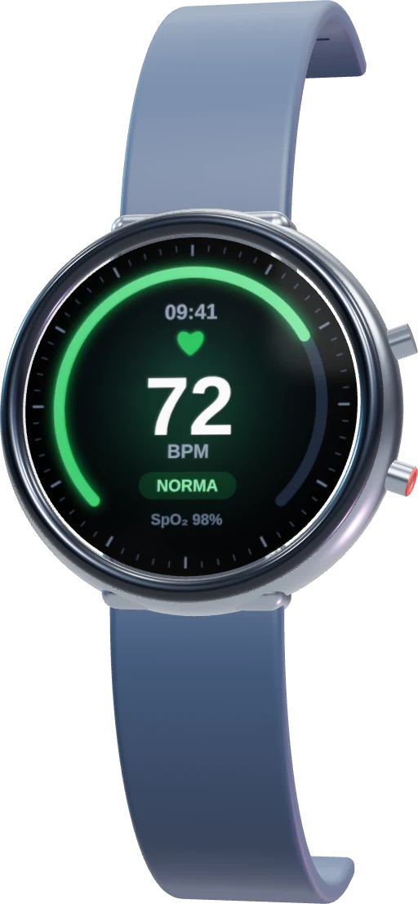
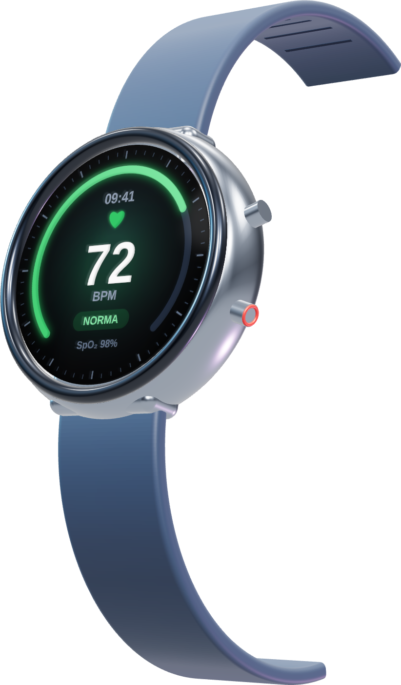
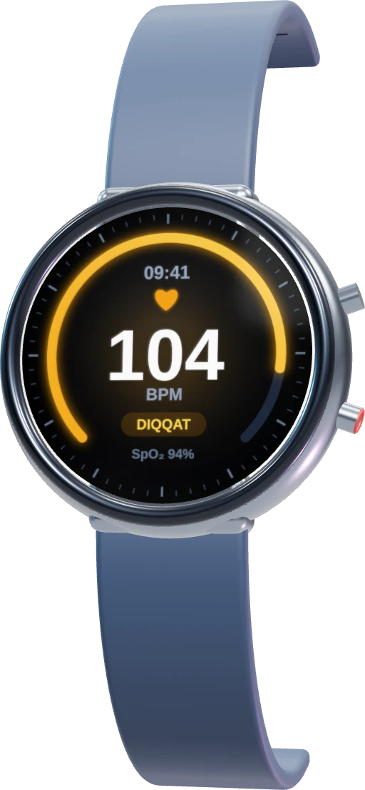
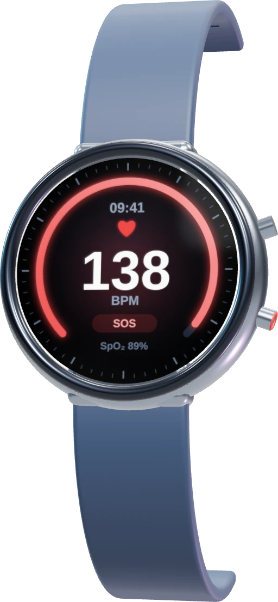

1
Soat o'lchaydi
Puls, SpO₂, uyqu. Tugma bosish shart emas.
Soat o'lchaydi. Shifokor kuzatadi. Siz xotirjamsiz.

Qolganini tizim, hamshira va shifokor bajaradi.

Puls, SpO₂, uyqu. Tugma bosish shart emas.
Normadan og'ish bo'lsa, mas'ul hamshiraga vazifa tushadi.
Ilovada va Telegram'da, qayerda bo'lmang.


Klinika uchun tartib.
Oylik to'lov. Istalgan vaqt to'xtatasiz.
Botga yozing. Soat va ulanishni o'zimiz sozlaymiz.